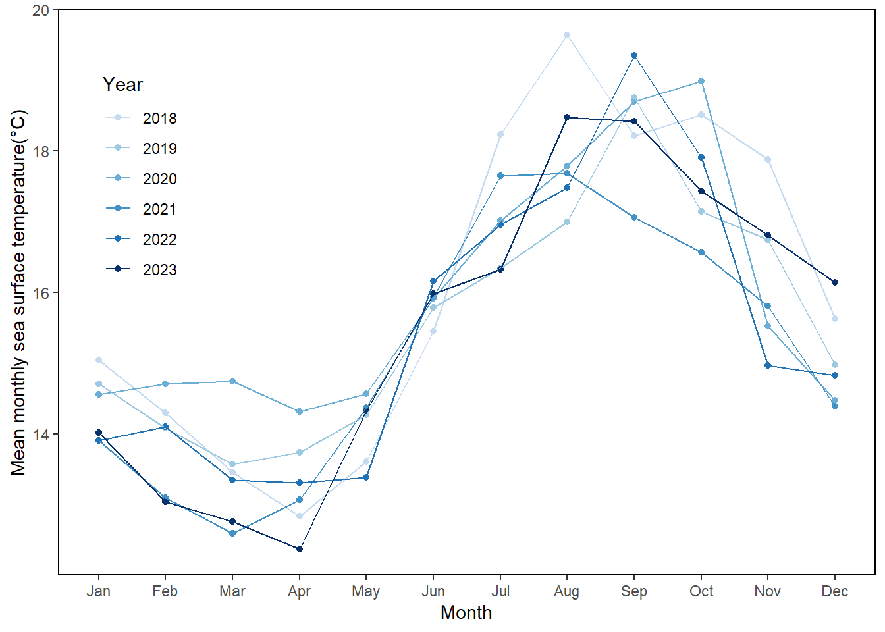
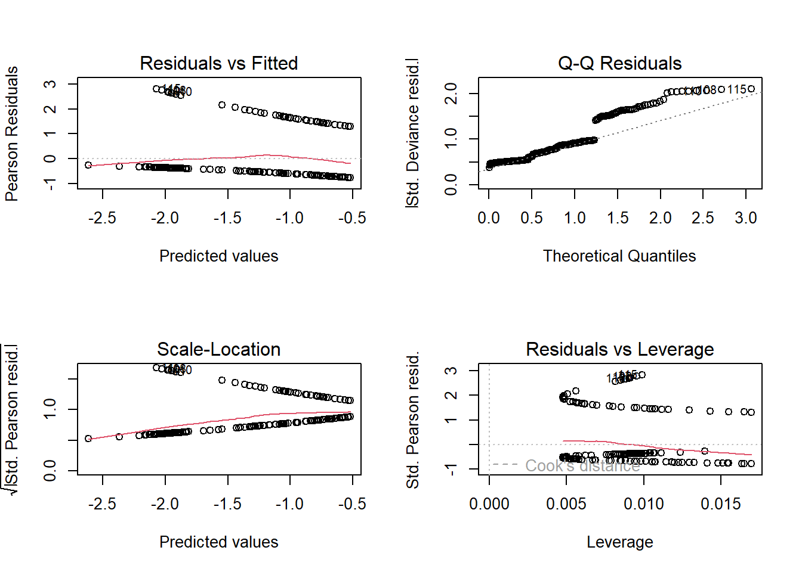

library(tidyverse)
library(janitor)
library(gt)
library(effsize)
library(here)
library(readxl)
library(scales)
library(ggeffects)
library(MuMIn)
library(dplyr)
library(RColorBrewer)
library(DHARMa)
sst <- read.csv(here("data","SST_update2023.csv"))
nest_boxes <- read.csv(here("data","occdist.csv"))ENVS-193DS Final
Final Set Up
Problem 1: Research Writing
a.) Transparent statistical methods
In part 1 they used a Pearson’s R test because they specifically state no correlation indicating that they are seeing if there is a correlation between the two variables being annual total nitrogen load and headwater distance. In addition they use numerical variables which indicate it’s a pearsons test and not a spearman’s test. In part 2 they use a one- way Anova test because the test describes how they are comparing means of different sources being urban land, fertilizer, and wastewater treatment across the one factor which is nitrogen load(kg year-1)
b.) More information needed
One additional part in part 2 the author could have addressed is a Post-HOC: Tukey HSD test because it would be meaningful to know which sources are different from each other. For example is there a difference in average nitrogen load between fertilizers and urban land. Another addition they could have mentioned is the effect size because it would be more descriptive to know the magnitude of the differences between sources, not just saying they are significant with a p value because there could be a significant p value but we want to know the magnitude of difference and what it means in the context of the problem.
c.)
We found a difference (η2= effect size) in average nitrogen load between sources(urban land, atmospheric deposition, fertilizer, waste water treatment, and grasslands)(one-way ANOVA, F(?, ?) = value, p = 0.02, α = significance level).We found a correlation between distance from headwater and annual total nitrogen load(Post-hoc: Tukey HSD, p=0.03)
Problem 2. Data visualization
##a.) Cleaning and Summarizing
sst_clean <- sst |> #uses the sst data frame
clean_names() |> # cleans columns names
select(temp,date) |> #uses the temp and date column
mutate(
date = mdy(date), #changes the date to this format(month-day-year)
year = year(date), #extracts year from the date
month = month(date, label= TRUE, abbr = TRUE), #extracts month from
month = as_factor(month), #month as a factor
month = fct_relevel( #reorders the months
month,
"Jan", "Feb", "Mar", "Apr", "May", "Jun", "Jul", "Aug", "Sep", "Oct", "Nov", "Dec")
) |>
filter(year %in% c(2018,2019,2020,2021,2022,2023)) |> # keeps only data from those years
mutate(year = as_factor(year)) |> #converts year to factor
group_by(year,month) |> #groups data by year and month
summarize(
mean_monthly_sst = round(mean(temp), 2), #calculates mean monthly sea surface temp, rounds to one decimal place
.groups = "drop") #drops groups after summarizing
sst_clean |> #takes the clean data frame
ungroup() |> # ungroups it
select(year,month, mean_monthly_sst) |> #Keeps specified columns
slice_sample(n = 5) #selects 5 random rows# A tibble: 5 × 3
year month mean_monthly_sst
<fct> <ord> <dbl>
1 2020 Oct 19.0
2 2022 Jun 16.2
3 2020 Dec 14.5
4 2021 Apr 13.1
5 2021 May 14.4str(sst_clean) # structure of sst_clean data frametibble [72 × 3] (S3: tbl_df/tbl/data.frame)
$ year : Factor w/ 6 levels "2018","2019",..: 1 1 1 1 1 1 1 1 1 1 ...
$ month : Ord.factor w/ 12 levels "Jan"<"Feb"<"Mar"<..: 1 2 3 4 5 6 7 8 9 10 ...
$ mean_monthly_sst: num [1:72] 15 14.3 13.5 12.8 13.6 ...b. Visualize the data
ggplot(data = sst_clean, #uses sst_clean data frame
aes(x=month, #x-axis as month
y= mean_monthly_sst, #y-axis as sst
color = year, # colors by year
group = year))+ #groups data by years
geom_point() + #adds points
geom_line()+ #adds lines
labs(
x = "Month", #changes x-axis label
y = "Mean monthly sea surface temperature(°C)", #labels y-axis
color = "Year" #labels legend
) +
scale_color_manual(values = c( #sets colors in gradient
"#c6dbef",
"#9ecae1",
"#6baed6",
"#4292c6",
"#2171b5",
"#08306b"
) ) +
theme_classic() + # theme
theme(
panel.grid.major = element_blank(), # no grid lines
panel.grid.minor = element_blank(), #no grid lines
panel.border = element_rect(color = "black", fill = NA, linewidth = 0.5),# makes a border
legend.position = c(0.1,0.7)) # changes legend positionWarning: A numeric `legend.position` argument in `theme()` was deprecated in ggplot2
3.5.0.
ℹ Please use the `legend.position.inside` argument of `theme()` instead.
Problem 3. Data analysis
a. Response variable
The 1s and 0s in this data describes if the nest boxes were occupied by each species with 0 being no and 1 being yes it occupied it.
b. Purpose of study
Swift parrots are an endangered species and the nest boxes were intended for them however they have different breeding patterns that lead to them not nesting in same location. Non target species are the common sterling which are native to the study area and can exploit the nest boxes. The tree martins however are nest competitors with both the common sterling and swift parrot
c. Difference in “seasons”
The authors compare the years 2016 and 2019. 2016 and 2019 specifically had a mast tree flowering event that had set off a breeding event for the swift parrots.
##d. Table of models
| Model number | Year (Season) | Distance to forest edge | Model description |
|---|---|---|---|
| 0 | No | No | no predictors (Null model) |
| 1 | Yes | No | Season only |
| 2 | No | Yes | Distance to forest edge |
| 3 | Yes | Yes | all predictors (full model) |
e. cleaning data/Run the models
nest_boxes_clean <- nest_boxes |> #uses nest_boxes data frame
clean_names() |> #cleans column names
mutate(box_occupant = case_match( #changes box_occupant names
box_occupant,
"common starling" ~ "Sturnus vulgaris",
"swift parrot" ~ "Lathamus discolor",
"tree martin" ~ "Petrochelidon nigricans")
) |>
mutate(season = as_factor(season)) |> #coverts season to a factor
rename(sp_occupant=sp) |> #renames sp column
select(edge_distance, season, sp_occupant) |> #uses selected columns
drop_na() #removes n/a valuesmodel0 <- glm(sp_occupant~1, # Response: sp_occupant, no predictors
data = nest_boxes_clean, #uses the nest_box_ clean data frame
family = "binomial")
model3 <- glm(sp_occupant ~edge_distance + season,# Predictors: distance to edge and season
data = nest_boxes_clean,#uses the nest_box_ clean data frame
family = "binomial")
model2 <- glm(sp_occupant ~ edge_distance,# Predictor: only distance to edge
data = nest_boxes_clean,#uses the nest_box_ clean data frame
family = "binomial")
model1 <- glm(sp_occupant~ season, # Predictor: only season
data = nest_boxes_clean,#uses the nest_box_ clean dat frame
family = "binomial") #binary outcomef.Check the diagnostics
par(mfrow = c(2, 2)) # displays plots in a 2x2 grid
plot(model0)hat values (leverages) are all = 0.004405286
and there are no factor predictors; no plot no. 5plot(model1)
plot(model2)
plot(model3)g. Select the best model
AICc(model0,
model1,
model2,
model3
) |>
# arranging output in descending order of AIC
arrange(AICc) df AICc
model3 3 226.3133
model2 2 229.6716
model1 2 236.3744
model0 1 238.8318The best model as determined by Akaike’s Information Criterion(AIC) included predictors edge distance and seasons(2016 and 2019) and the response is if swift parrot was present(occupied=1, not occupied =0)
##h. Visualize the model predictions
model_preds <- ggpredict(model3,# uses model 3
terms = c(
"edge_distance", #predictions using edge distance
"season")) # for each level of seasonData were 'prettified'. Consider using `terms="edge_distance [all]"` to
get smooth plots.model_preds_plotting <- model_preds |> # using model preds data frame
rename(edge_distance = x, season = group) #renaming edge distance column
ggplot() +
geom_jitter(data=nest_boxes_clean, #uses nest boxes clean data frame
aes(x= edge_distance, y= sp_occupant, color = season), #uses original data for underlying points
alpha = 0.2, #makes points transparent
width = 0.1, #jitter horizontally
height = 0) + #no vertical jitter
geom_line(data= model_preds_plotting, #uses model_preds_plotting data frame
aes(x= edge_distance, #x-axis as edge distance
y= predicted, color = season))+ # predicted probability for model
geom_ribbon(data=model_preds_plotting, #uses model_preds_plotting data frame
aes(x= edge_distance, # x-axis as edge distance
ymin = conf.low,
ymax = conf.high, fill= season), #lower and upper bounds of CI
alpha= 0.15) + #transparency
labs(
title = "Predicted Nest Box Occupancy of Swift Parrot\n by forest edge distance and season", #title of plot
x = "Distance from forest edge(m)", #x-axis label
y= "Swift Parrot Nest box Occupancy") +# y-axis label
scale_color_manual(values = c("2016" = "green", "2019" = "purple"))+ #changes year colors
scale_fill_manual(values = c("2016" = "green", "2019" = "purple"))+# changes original colors of years
theme_classic()##i. Write a caption for your figure
Figure 1: A logistic regression model showing the predicted probability of swift parrot(Lathamus discolor) nest occupancy by distance from forest edge and season. The lines represent the predicted probability of nest occupancy by the Swift Parrot from each season The purple line represents the probability for the season of 2019 and green line represent the season of 2016. The shaded ribbons around the lines represent the 95% confidence interval for the predicted probabilities. The individual points represent swift parrot occupancy with 1 being occupied and 0 being not occupied. Stojanovic, D., Owens, G., Young, C., Alves, F., & Heinsohn, R. (2021). Do nest boxes breed the target species or its competitors? A case study of a critically endangered bird [Dataset]. Dryad. https://doi.org/10.5061/dryad.83bk3j9sb
j. Calculate model Predictions
ggpredict(model3, terms = c("edge_distance [0,900]", "season")) #predictions for edge distance for 0 and 900 meters away. seprates each level of season# Predicted probabilities of sp_occupant
season: 2016
edge_distance | Predicted | 95% CI
--------------------------------------
0 | 0.48 | 0.33, 0.64
900 | 0.12 | 0.06, 0.24
season: 2019
edge_distance | Predicted | 95% CI
--------------------------------------
0 | 0.30 | 0.18, 0.44
900 | 0.06 | 0.03, 0.13k. Interpret your results
For season 2016 at forest edge 0m the predicted probability is 0.48(95% CI:[0.33,0.64]). In 2019 at a forest edge distance of 900m the predicted probability is 0.30(95% CI:[0.18,0.44]). Between the 2016 and 2019 seasons at a forest edge distance of 0m the predicted probability of nest box occupancy is greater in 2016.
For season 2016 at forest edge 900(m) the predicted probability is 0.12(95% CI:[0.06,0.24]). In 2019 at a forest edge distance of 900(m) the predicted probability is 0.06(95% CI:[0.03,0.13]). Between the 2016 and 2019 seasons at forest edge 900(m) the predicted probability of nest box occupancy is greater in 2016
the predicted probability of occupancy at a forest edge distance of (0m) is greater than being 900(m)away from forest edge for both seasons. The farther away the nest box is the probability of occupancy decreases.
The swift parrot is a sensitive species and as figure 1 shows the greater the distance from forest edge the probability of swift parrot occupying the nest box decreases. This is likely due to other species like the Tree martins that has a high probability of occupying the nest boxes that are farther from the forest edge.
Problem 4. Affective and exploratory visualizations
a. Comparing visualizations
the visualizations are different in that for my affective visualization I represented the data with only the mean time spent on school work represented in circles for each day of the week. Homework 2 the visualization was represented as jittered points for each day of the week on a plot with minimal data.
Some similarities were that I had the same labels (x axis) for both visualization which was day of week. They both represented categorical variables.
For homework 2 I could not see if there was going to be a trend because there was very little data. However for the affective visualization you can see for each day of the weak the mean time spent on schoolwork because we have more data. we can see what days i spent the most doing school work while in homework 2 I could not see a pattern yet.
Some feed back I got from week 9 workshop was to add add a gradient score for the shade of color I used for each day of the week representing the mean. I implemented this suggestion my making a gradient score on the right side of my piece showing that the darkest shade of red represented the highest mean and the lowest shade represents the lowest average spent on school work.